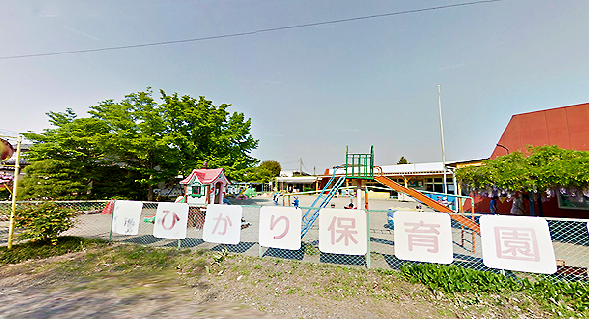

方針
私たちは、未来ある子どもたちの健やかな成長のため、
ご家庭の方々と共に子どもたちと深くかかわり、
一人ひとりの子どもたちに愛情を注ぎながら豊かな力を育みます。
保育目標
考える子ども(考える力)
おもいやりのある子ども(思いやり)
「ありがとう」といえる子ども(感謝の心)

園について
【沿 革】
| 昭和５７年 ３月１０日 | 設立 定員６０名 |
| 昭和５７年 ４月 １日 | 開園 |
| 家庭支援保育推進事業開始 | |
| 昭和５８年 ４月 １日 | 乳児保育(産休明け保育)開始 |
| 昭和５９年 ４月 １日 | 交通安全モデル施設の指定を受ける。 |
| 昭和６０年１０月１８日 | 交通功労団体として、知事表彰を受ける。 |
【特別保育】
乳児保育(産休明け)
延長保育(午前７時から午後７時開園)
【特 色】
保育目標にそい、心を育てる保育を心がけています。
・生き物の世話、農園での野菜の栽培・収穫・調理、異年齢児混合保育
様々な行事や経験を通じて、自分で考え課題を解決する力をつけます。
・納涼祭、運動会、お泊り保育、保育発表会
健康で丈夫な身体をつくります。
・はだし保育、乾布まさつ、あるけあるけ、雑巾がけ
地域にひらかれた保育園を目指し、地域との交流をはかっています。
・お年寄りとの交流、青空保育